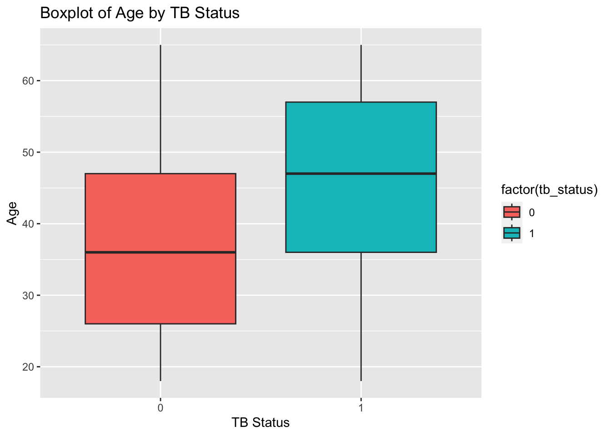
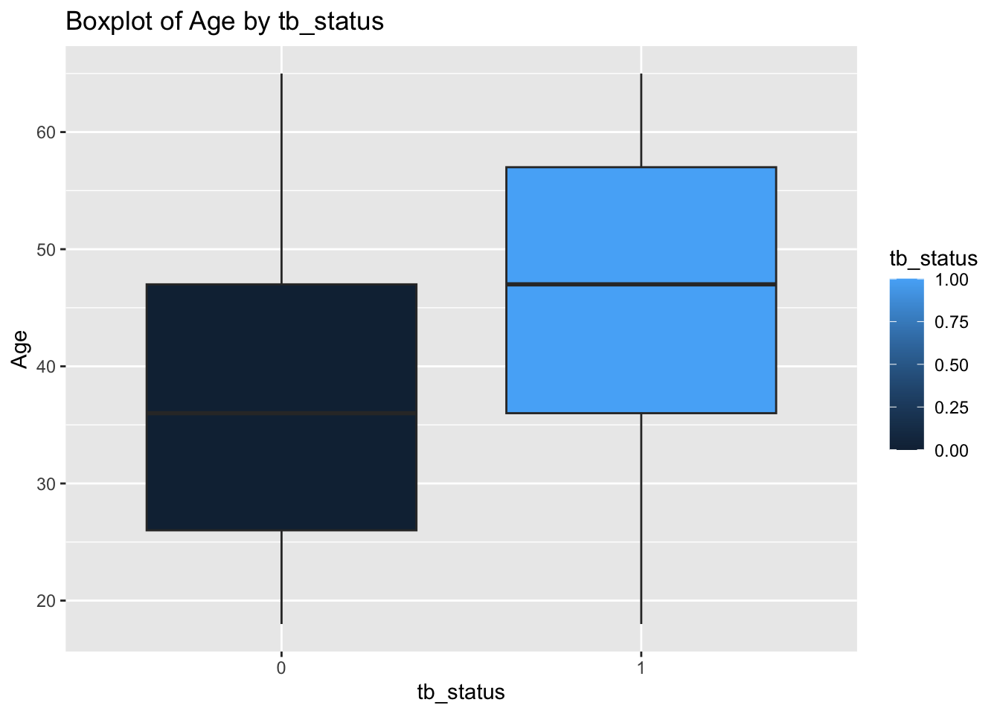
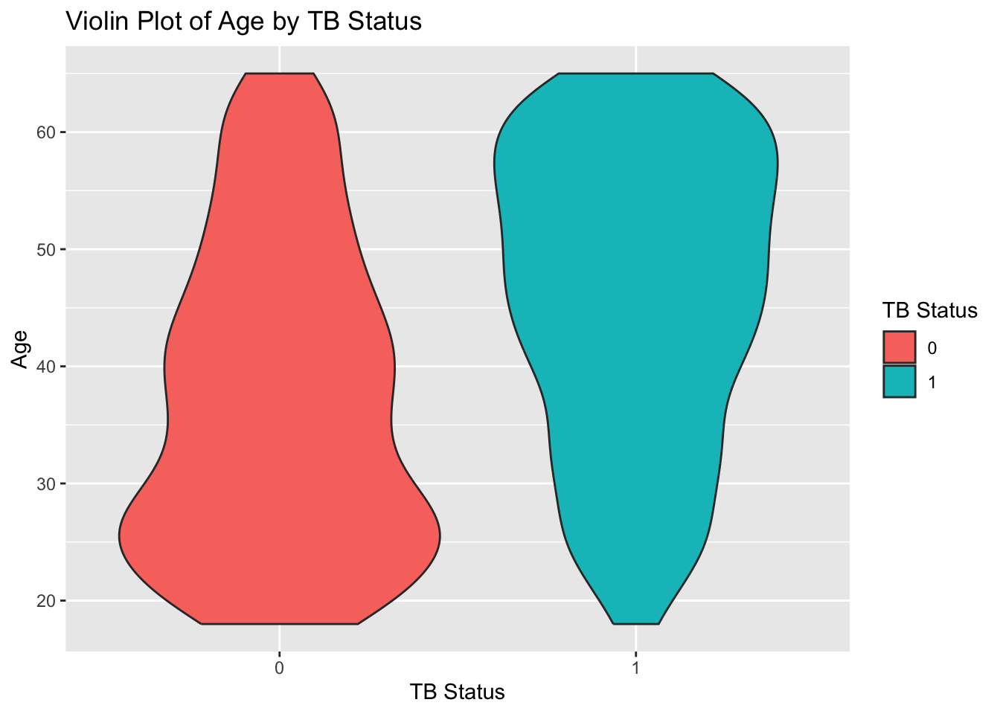
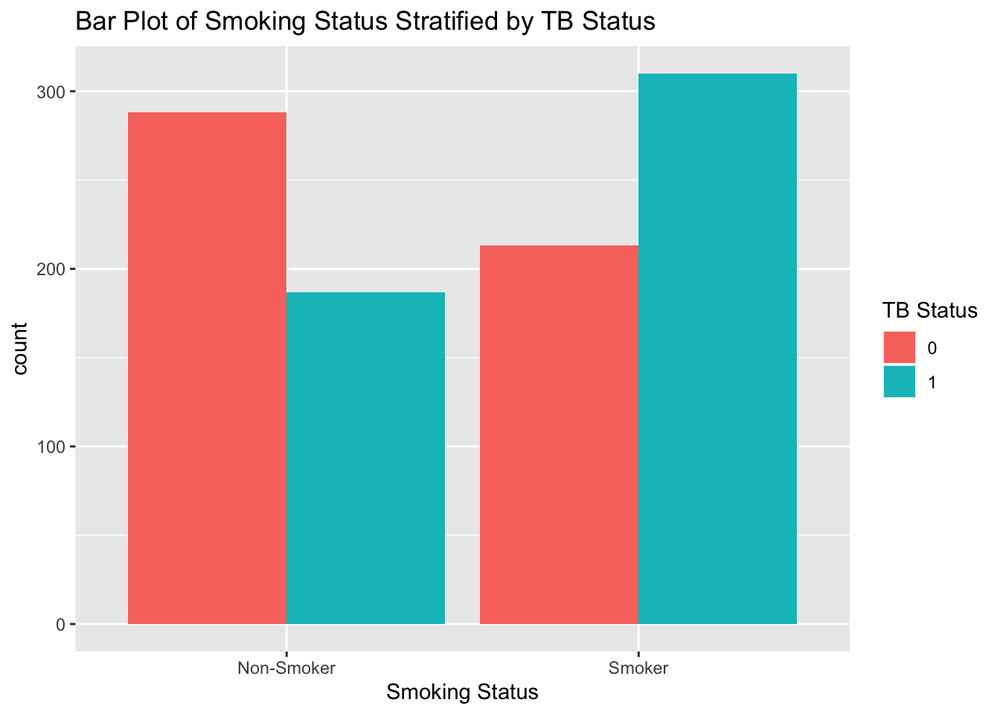

Tuberculosis (TB) remains a major global health concern, with millions of new cases reported annually. This exercise reviews and analyzes key factors associated with TB, ranging from demographic and lifestyle factors to health-related variables. The aim of analysis provides understanding of factors associated to TB.The data used in this exercise is synthetic data and was created with the help of a generative Pre-trained Transformer 3.5 (ChatGPT3.5)
# Install and load necessary packages#install.packages("tidyverse")library(tidyverse)
── Attaching core tidyverse packages ──────────────────────── tidyverse 2.0.0 ──
✔ dplyr 1.1.4 ✔ readr 2.1.4
✔ forcats 1.0.0 ✔ stringr 1.5.1
✔ ggplot2 3.4.4 ✔ tibble 3.2.1
✔ lubridate 1.9.3 ✔ tidyr 1.3.0
✔ purrr 1.0.2
── Conflicts ────────────────────────────────────────── tidyverse_conflicts() ──
✖ dplyr::filter() masks stats::filter()
✖ dplyr::lag() masks stats::lag()
ℹ Use the conflicted package (<http://conflicted.r-lib.org/>) to force all conflicts to become errors
# Set a seed for reproducibilityset.seed(123)
The set seed was used above for reproducibility reasons and randomly created n =998 observations
Data Processing
# Populate the dataframe with synthetic datan <-998# Number of observations# creating and populating Variablestb_data <-data.frame(age =sample(18:65, n, replace =TRUE), # Sample ages from 18 to 65gender =sample(c("Male", "Female"), n, replace =TRUE), # Randomly assign gendersmoking_status =sample(c("Smoker", "Non-Smoker"), n, replace =TRUE), # Randomly assign smoking statusdiabetes_status =sample(c("Diabetic", "Non-Diabetic"), n, replace =TRUE), # Randomly assign diabetes statusurban_rural_status =sample(c("Urban", "Rural"), n, replace =TRUE) # Randomly assign urban/rural status)# Create associations between variables and TB statustb_data$tb_status_prob <-plogis(0.05* (tb_data$age -65) +ifelse(tb_data$smoking_status =="Smoker", 1, 0) +ifelse(tb_data$diabetes_status =="Diabetic", 1, 0) +ifelse(tb_data$urban_rural_status =="Urban", 0.5, 0)) # Calculate the probability of having TB# Generate TB status based on probabilitytb_data$tb_status <-ifelse(runif(n) < tb_data$tb_status_prob, 1, 0) # Assign 1 for TB case, 0 for not TB case# Summary statisticssummary(tb_data)
age gender smoking_status diabetes_status
Min. :18.00 Length:998 Length:998 Length:998
1st Qu.:29.00 Class :character Class :character Class :character
Median :42.00 Mode :character Mode :character Mode :character
Mean :41.43
3rd Qu.:53.00
Max. :65.00
urban_rural_status tb_status_prob tb_status
Length:998 Min. :0.08707 Min. :0.000
Class :character 1st Qu.:0.33181 1st Qu.:0.000
Mode :character Median :0.51250 Median :0.000
Mean :0.50969 Mean :0.498
3rd Qu.:0.67918 3rd Qu.:1.000
Max. :0.92414 Max. :1.000
Data Visualizations
Now I will carry some visualizations for some the variables
# Boxplot of Age by TB Statusggplot(tb_data, aes(x =factor(tb_status), y = age, fill =factor(tb_status))) +geom_boxplot() +labs(title ="Boxplot of Age by TB Status",x ="TB Status",y ="Age")

The 0 = No TB and 1 = TB
# Boxplot of Age by Smoking Statusggplot(tb_data, aes(x =factor(tb_status), y = age, fill = tb_status)) +geom_boxplot() +labs(title ="Boxplot of Age by tb_status",x ="tb_status",y ="Age")

# Histogram of Age Stratified by TB Statusggplot(tb_data, aes(x = age, fill =factor(tb_status))) +geom_histogram(binwidth =5, alpha =0.7, position ="identity") +labs(title ="Histogram of Age Stratified by TB Status",x ="Age",fill ="TB Status")
The 0 = No TB and 1 = TB
Now I will compare the distribution of age across TB Status.
# Violin Plot of Age by TB Statusggplot(tb_data, aes(x =factor(tb_status), y = age, fill =factor(tb_status))) +geom_violin() +labs(title ="Violin Plot of Age by TB Status",x ="TB Status",y ="Age",fill ="TB Status")

# Bar Plot of Smoking Status Stratified by TB Statusggplot(tb_data, aes(x = smoking_status, fill =factor(tb_status))) +geom_bar(position ="dodge") +labs(title ="Bar Plot of Smoking Status Stratified by TB Status",x ="Smoking Status",fill ="TB Status")

The bar graph shows that TB is more prevalent in smokers compared to the non smokers
# Creating a table stratified by TB status# List to store cross-tabulation tables for each variablecross_tab_list <-list()# Cross-tabulation table for tb_status and gendercross_tab_gender <-table(tb_data$tb_status, tb_data$gender)cross_tab_list[["Gender"]] <- cross_tab_gender# Cross-tabulation table for tb_status and smoking_statuscross_tab_smoking <-table(tb_data$tb_status, tb_data$smoking_status)cross_tab_list[["Smoking Status"]] <- cross_tab_smoking# Cross-tabulation table for tb_status and diabetes_statuscross_tab_diabetes <-table(tb_data$tb_status, tb_data$diabetes_status)cross_tab_list[["Diabetes Status"]] <- cross_tab_diabetes# Cross-tabulation table for tb_status and urban_rural_statuscross_tab_urban_rural <-table(tb_data$tb_status, tb_data$urban_rural_status)cross_tab_list[["Urban/Rural Status"]] <- cross_tab_urban_rural# Combine all cross-tabulation tables into one table using cbindcombined_cross_tab <-do.call(cbind, cross_tab_list)# Print the combined tablecat("Combined Cross-tabulation Table for TB Status and Other Variables:\n")
Combined Cross-tabulation Table for TB Status and Other Variables:
The above table shows the distributions of TB status across different factors
Model Fitting
Now I will fit the different variables to look at the association using step-wise method
# Fitting a logistic regression models model1 <-glm(tb_status ~ age, data = tb_data, family ="binomial")summary(model1)
Call:
glm(formula = tb_status ~ age, family = "binomial", data = tb_data)
Coefficients:
Estimate Std. Error z value Pr(>|z|)
(Intercept) -2.068982 0.223218 -9.269 <2e-16 ***
age 0.049734 0.005141 9.675 <2e-16 ***
---
Signif. codes: 0 '***' 0.001 '**' 0.01 '*' 0.05 '.' 0.1 ' ' 1
(Dispersion parameter for binomial family taken to be 1)
Null deviance: 1383.5 on 997 degrees of freedom
Residual deviance: 1280.4 on 996 degrees of freedom
AIC: 1284.4
Number of Fisher Scoring iterations: 4
Model1 suggests that age is a statistically significant associated with Tuberculosis with P-value < 0.05
model2 <-glm(tb_status ~ age + gender,data = tb_data, family ="binomial")summary(model2)
Call:
glm(formula = tb_status ~ age + gender, family = "binomial",
data = tb_data)
Coefficients:
Estimate Std. Error z value Pr(>|z|)
(Intercept) -1.954275 0.233296 -8.377 <2e-16 ***
age 0.049675 0.005145 9.654 <2e-16 ***
genderMale -0.216892 0.133752 -1.622 0.105
---
Signif. codes: 0 '***' 0.001 '**' 0.01 '*' 0.05 '.' 0.1 ' ' 1
(Dispersion parameter for binomial family taken to be 1)
Null deviance: 1383.5 on 997 degrees of freedom
Residual deviance: 1277.7 on 995 degrees of freedom
AIC: 1283.7
Number of Fisher Scoring iterations: 4
Model2 suggests that gender variable may not be a statistically significant predictor of TB status in this model with p-value > 0.05
model3 <-glm(tb_status ~ age + gender + smoking_status,data = tb_data, family ="binomial")summary(model3)
Call:
glm(formula = tb_status ~ age + gender + smoking_status, family = "binomial",
data = tb_data)
Coefficients:
Estimate Std. Error z value Pr(>|z|)
(Intercept) -2.472177 0.256980 -9.620 < 2e-16 ***
age 0.051108 0.005273 9.693 < 2e-16 ***
genderMale -0.214574 0.136601 -1.571 0.116
smoking_statusSmoker 0.868348 0.137558 6.313 2.74e-10 ***
---
Signif. codes: 0 '***' 0.001 '**' 0.01 '*' 0.05 '.' 0.1 ' ' 1
(Dispersion parameter for binomial family taken to be 1)
Null deviance: 1383.5 on 997 degrees of freedom
Residual deviance: 1236.7 on 994 degrees of freedom
AIC: 1244.7
Number of Fisher Scoring iterations: 4
Age and smoking status are statistically significant associated with Tuberculosis status in model3. However, the gender variable does not appear again to be statistically significant, as the p-value is above the conventional significance level.
model4 <-glm(tb_status ~ age + gender + smoking_status + diabetes_status ,data = tb_data, family ="binomial")summary(model4)
Call:
glm(formula = tb_status ~ age + gender + smoking_status + diabetes_status,
family = "binomial", data = tb_data)
Coefficients:
Estimate Std. Error z value Pr(>|z|)
(Intercept) -2.216070 0.262147 -8.454 < 2e-16 ***
age 0.054673 0.005436 10.058 < 2e-16 ***
genderMale -0.209714 0.138860 -1.510 0.131
smoking_statusSmoker 0.877283 0.139874 6.272 3.57e-10 ***
diabetes_statusNon-Diabetic -0.779280 0.141301 -5.515 3.49e-08 ***
---
Signif. codes: 0 '***' 0.001 '**' 0.01 '*' 0.05 '.' 0.1 ' ' 1
(Dispersion parameter for binomial family taken to be 1)
Null deviance: 1383.5 on 997 degrees of freedom
Residual deviance: 1205.4 on 993 degrees of freedom
AIC: 1215.4
Number of Fisher Scoring iterations: 4
Age, smoking status, and diabetes status are statistically significant associated with TB in this model4. However, the gender again does not appear to be statistically significant, as the p-value is above the conventional significance level.
model5 <-glm(tb_status ~ age + gender + smoking_status + diabetes_status + urban_rural_status,data = tb_data, family ="binomial")summary(model5)
Call:
glm(formula = tb_status ~ age + gender + smoking_status + diabetes_status +
urban_rural_status, family = "binomial", data = tb_data)
Coefficients:
Estimate Std. Error z value Pr(>|z|)
(Intercept) -2.384925 0.273729 -8.713 < 2e-16 ***
age 0.055037 0.005444 10.110 < 2e-16 ***
genderMale -0.193101 0.139444 -1.385 0.1661
smoking_statusSmoker 0.869065 0.140283 6.195 5.82e-10 ***
diabetes_statusNon-Diabetic -0.780349 0.141733 -5.506 3.68e-08 ***
urban_rural_statusUrban 0.329746 0.140109 2.353 0.0186 *
---
Signif. codes: 0 '***' 0.001 '**' 0.01 '*' 0.05 '.' 0.1 ' ' 1
(Dispersion parameter for binomial family taken to be 1)
Null deviance: 1383.5 on 997 degrees of freedom
Residual deviance: 1199.9 on 992 degrees of freedom
AIC: 1211.9
Number of Fisher Scoring iterations: 4
Age, smoking status, diabetes status, and urban/rural status are statistically significant associated with TB in model5. However,again the gender variable does not appear to be statistically significant, as the p-value is above the conventional significance level.
Conclusion
Using Akaike Information Criterion for model selection. Model 5 has the lowest AIC (1231.2), suggesting it provides a better trade-off between goodness of fit and simplicity. The inclusion of additional variables (gender, urban/rural status) doesn’t necessarily improve model fit, as indicated by AIC and residual deviance.